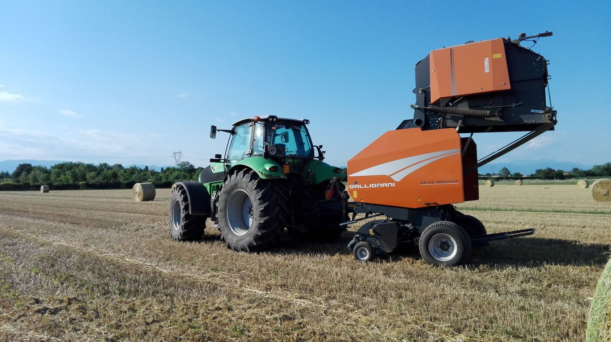
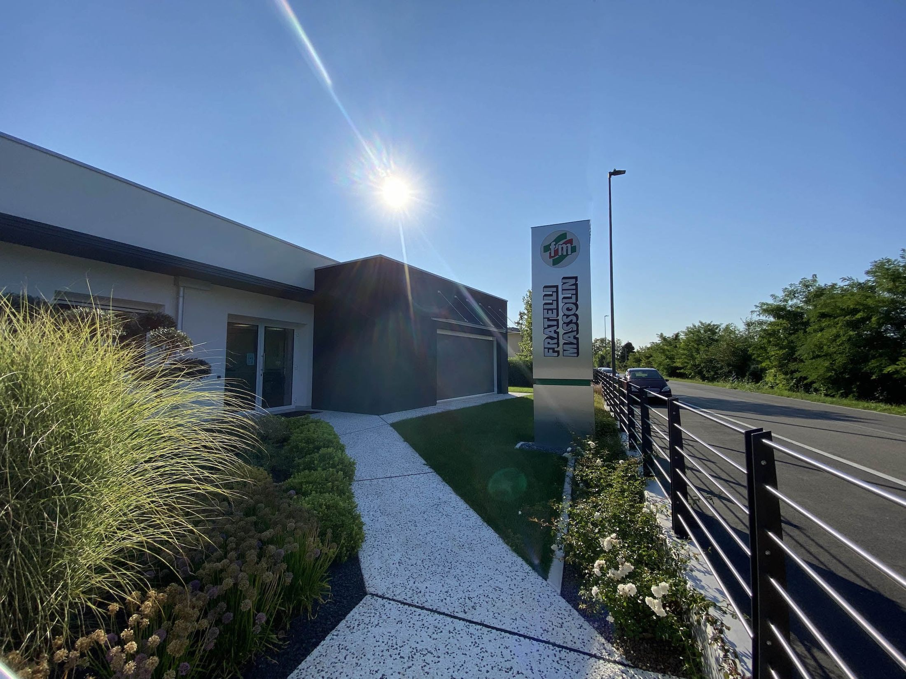
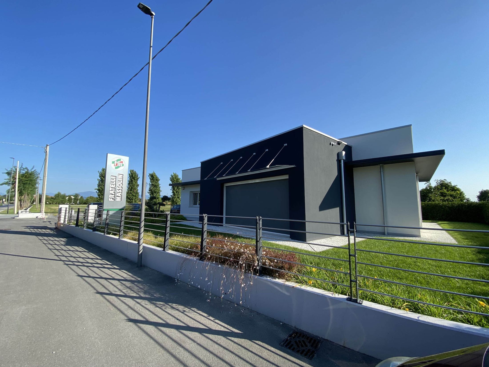
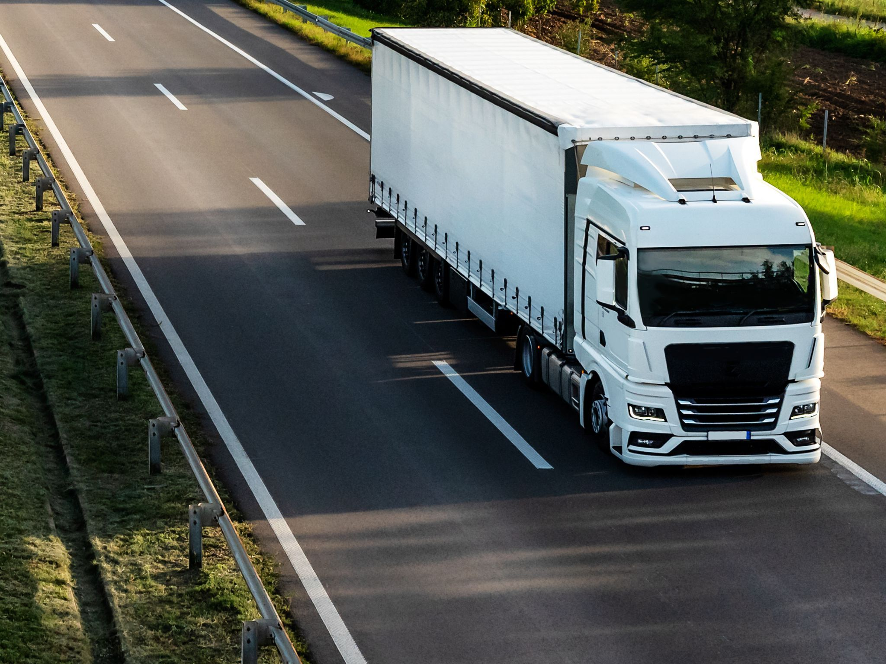
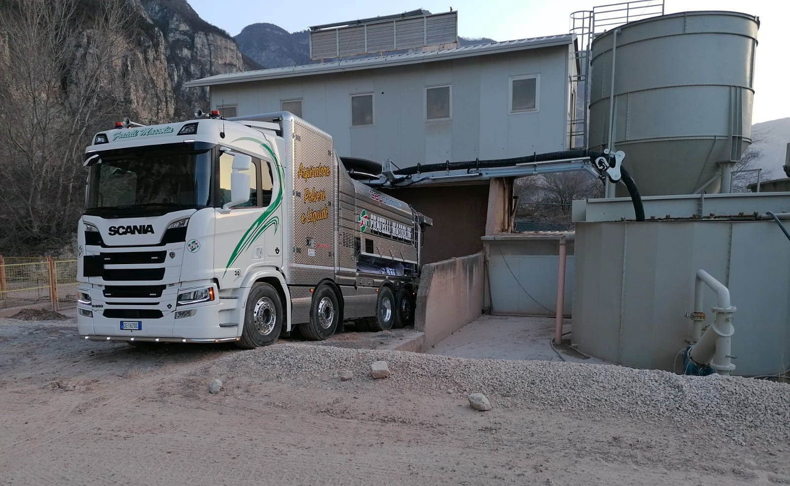

Ponzano Veneto Treviso dal 1999
27 annidi lavoroa Ponzano Veneto.
Servizi ecologici - Le migliori soluzioni per preservare il futuro
Richiedi un preventivo
La storia
27 anni sullo stesso territorio.

Nasce FM Fratelli Massolin a Ponzano Veneto.
Azienda di famiglia (fratelli Massolin).
Spurghi civili e industriali e pronto intervento, Aspirazione polveri e bonifiche ambientali, Interventi in spazi confinati e sanificazioni, Trasporto rifiuti e conto terzi.
Servizi
Tutto il servizio, un interlocutore.
Per comuni, aziende e privati di Treviso.
Spurghi civili e industriali e pronto intervento
Spurgo e pulizia di fosse, pozzetti e condotte, con mezzi attrezzati e smaltimento autorizzato di quanto aspirato.

Aspirazione polveri e bonifiche ambientali
Bonifiche con piano di intervento, messa in sicurezza dell'area e smaltimento autorizzato.

Interventi in spazi confinati e sanificazioni
Pulizie e sanificazioni di ambienti e impianti, con prodotti e procedure certificati.
Trasporto rifiuti e conto terzi
Trasporto conto terzi con mezzi autorizzati all'Albo Gestori Ambientali.

Manutenzione aree verdi, potature e disboscamenti
Manutenzione del verde e gestione degli sfalci.
Lavori agricoli conto terzi
Spurgo e pulizia di fosse, pozzetti e condotte, con mezzi attrezzati e smaltimento autorizzato di quanto aspirato.
Come lavoriamo
Ogni passaggio, tracciato.
Fase 01
Chiamata
Ci dite dove e cosa: fossa, pozzetto, condotta, urgenza.
Fase 02
Sopralluogo
Valutiamo accesso, volumi e mezzo adatto.
Fase 03
Intervento
Aspirazione, lavaggio e, se serve, video-ispezione.
Fase 04
Trasporto
Il refluo va a un impianto autorizzato, con formulario.
Fase 05
Documenti
Vi restano i documenti di trasporto e smaltimento.
Lavora con noi
Autisti, operatori, tecnici: cerchiamo persone che conoscono il territorio.
Mandateci il vostro curriculum: lo leggiamo tutto, e vi richiamiamo.
Contatti
Un preventivo, senza giri.
Enti, aziende e privati: indicateci il servizio e la zona, vi rispondiamo con tempi e preventivo.